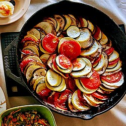

Ratatouille

One of the first recipes I ever learned to cook on my own, inspired by watching the Pixar movie, of course.
Ingredients
- 2 tbsp olive oil
- 4 cloves garlic, minced or pressed
- 1 medium onion, chopped
- 2 medium zucchini, cut onto 1/2-inch cubes
- 2 medium green or red peppers, diced
- 1 medium eggplant, cut into 1/2-inch cubes
- 1/4 cub chopped fresh basil
- 2 cups diced cnaned tomatoes (or about 4 medium fresh tomatoes, chopped)
- 1 tsp salt
- 1/4 tsp pepper
Steps
- Heat the olive oil in a large skillet over medium heat.
- Add the garlic and onion and cook until softened—about 5 minutes.
- Add the zucchini, peppers, eggplant, and basil.
- ix well, and cook, stirring, for about 10 minutes, or until the vegetables are almost tender
(test with a fork to see).
- Add the tomatoes, salt and pepper, and cook for about 15 minutes more, stirring occasionally,
until the vegetables are tender and the flavors are blended.
- Serve hot or at room temperature.
Home